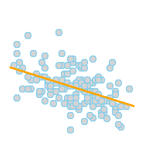
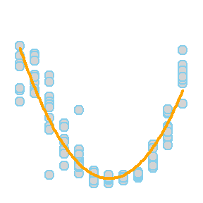
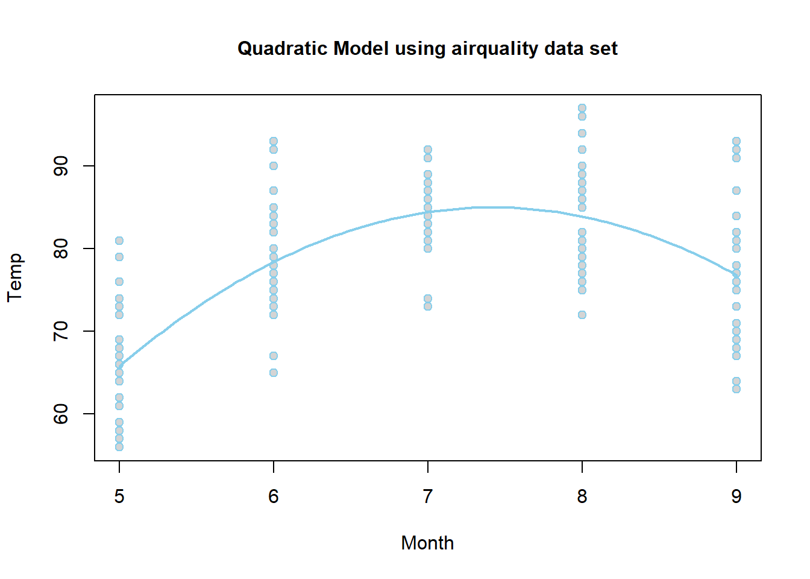
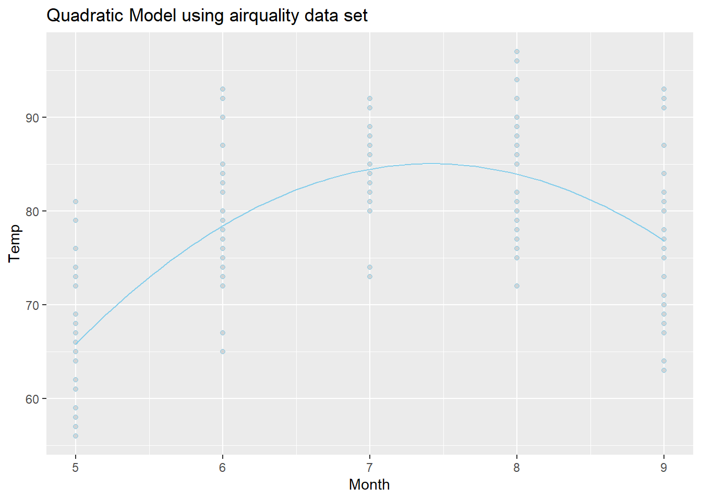
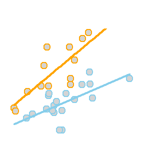
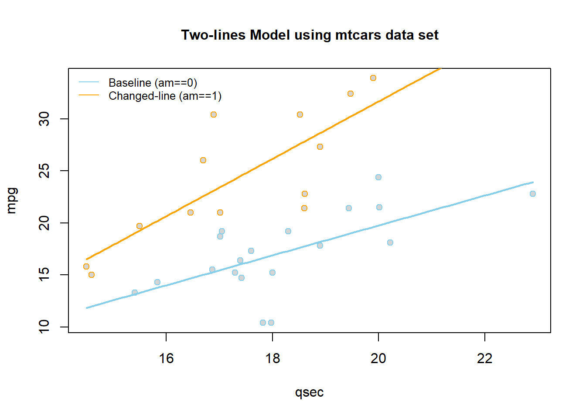
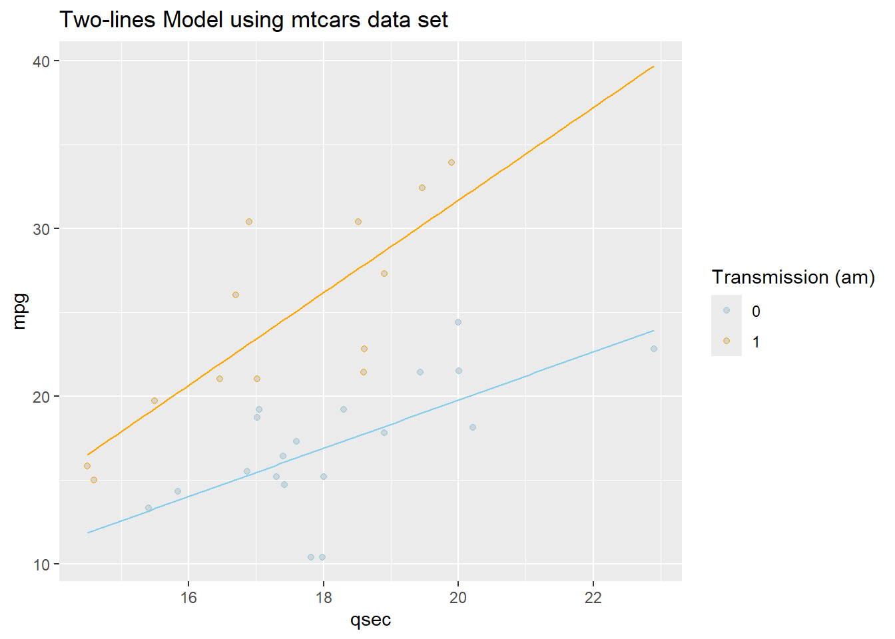
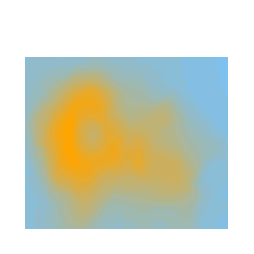

Linear Regression
Determine which explanatory variables have a significant effect on the mean of the quantitative response variable.
Simple Linear Regression

Simple linear regression is a good analysis technique when the data consists of a single quantitative response variable \(Y\) and a single quantitative explanatory variable \(X\).
Overview
Mathematical Model
The true regression model assumed by a regression analysis is given by
The estimated regression line obtained from a regression analysis, pronounced “y-hat”, is written as
Note: see the Explanation tab The Mathematical Model for details about these equations.
Hypotheses
\[ \left.\begin{array}{ll} H_0: \beta_1 = 0 \\ H_a: \beta_1 \neq 0 \end{array} \right\} \ \text{Slope Hypotheses}^{\quad \text{(most common)}}\quad\quad \]
\[ \left.\begin{array}{ll} H_0: \beta_0 = 0 \\ H_a: \beta_0 \neq 0 \end{array} \right\} \ \text{Intercept Hypotheses}^{\quad\text{(sometimes useful)}} \]
If \(\beta_1 = 0\), then the model reduces to \(Y_i = \beta_0 + \epsilon_i\), which is a flat line. This means \(X\) does not improve our understanding of the mean of \(Y\) if the null hypothesis is true.
If \(\beta_0 = 0\), then the model reduces to \(Y_i = \beta_1 X + \epsilon_i\), a line going through the origin. This means the average \(Y\)-value is \(0\) when \(X=0\) if the null hypothesis is true.
Assumptions
This regression model is appropriate for the data when five assumptions can be made.
Linear Relation: the true regression relation between \(Y\) and \(X\) is linear.
Normal Errors: the error terms \(\epsilon_i\) are normally distributed with a mean of zero.
Constant Variance: the variance \(\sigma^2\) of the error terms is constant (the same) over all \(X_i\) values.
Fixed X: the \(X_i\) values can be considered fixed and measured without error.
Independent Errors: the error terms \(\epsilon_i\) are independent.
Note: see the Explanation tab Residual Plots & Regression Assumptions for details about checking the regression assumptions.
Interpretation
The slope is interpreted as, “the change in the average y-value for a one unit change in the x-value.” It is not the average change in y. It is the change in the average y-value.
The y-intercept is interpreted as, “the average y-value when x is zero.” It is often not meaningful, but is sometimes useful. It just depends if x being zero is meaningful or not within the context of your analysis. For example, knowing the average price of a car with zero miles is useful. However, pretending to know the average height of adult males that weigh zero pounds, is not useful.
R Instructions
Console Help Command: ?lm()
Perform the Regression
mylm This is some
name you come up with that will become the R object that stores the
results of your linear regression lm(...) command.
<- This
is the “left arrow” assignment operator that stores the results of your
lm() code into mylm name. lm( lm(…) is an R function
that stands for “Linear Model”. It performs a linear regression analysis
for Y ~ X. Y Y is your quantitative response variable. It is the
name of one of the columns in your data set. ~ The tilde symbol ~ is
used to tell R that Y should be treated as the response variable that is
being explained by the explanatory variable X. X, X is the quantitative
explanatory variable (at least it is typically quantitative but could be
qualitative) that will be used to explain the average Y-value.
data = NameOfYourDataset NameOfYourDataset is the name of the dataset that
contains Y and X. In other words, one column of your dataset would be
your response variable Y and another column would be your explanatory
variable X. ) Closing parenthesis for the lm(…) function.
summary(mylm) The summary command allows you to
print the results of your linear regression that were previously saved
in mylm name. Click to Show Output Click to View Output.
Check Assumptions 1, 2, 3, and 5
par( The par(…)
command stands for “Graphical PARameters”. It allows you to control
various aspects of graphics in Base R. mfrow= This stands for
“multiple frames filled by row”, which means, put lots of plots on the
same row, starting with the plot on the left, then working towards the
right as more plots are created.
c( The combine function c(…) is used to
specify how many rows and columns of graphics should be placed
together. 1, This specifies that 1 row of graphics should be
produced. 3 This states that 3 columns of graphics should be
produced. ) Closing parenthesis for c(…) function.
) Closing
parenthesis for par(…) function.
plot( This version of
plot(…) will actually create several regression diagnostic plots by
default. mylm, This is the name of an lm object that you created
previously. which= This allows you to select “which” regression
diagnostic plots should be drawn.
1 Selecting 1, would give the residuals
vs. fitted values plot only. :
The colon allows you to select more than just
one plot. 2 Selecting 2 also gives the Q-Q Plot of residuals.
If you wanted to instead you could just use which=1 to get the residuals
vs fitted values plot, then you could use qqPlot(mylm$residuals) to
create a fancier Q-Q Plot of the residuals. ) Closing parenthesis for
plot(…) function.
plot( This version of plot(…) will be used to create a
time-ordered plot of the residuals. The order of the residuals is the
original order of the x-values in the original data set. If the original
data set doesn’t have an order, then this plot is not
interesting. mylm The lm object that you created previously.
$ This allows
you to access various elements from the regression that was
performed. residuals This grabs the residuals for each observation in
the regression. ) Closing parenthesis for plot(…) function.
Click to Show Output Click to View
Output.
Plotting the Regression Line
To add the regression line to a scatterplot use the
abline(...) command:
plot( The plot(…)
function is used to create a scatterplot with a y-axis (the vertical
axis) and an x-axis (the horizontal axis). Y This is the “response
variable” of your regression. The thing you are interested in
predicting. This is the name of a “numeric” column of data from the data
set called YourDataSet. ~ The tilde “~” is used to relate Y to X and can be
found on the top-left key of your keyboard. X, This is the explanatory
variable of your regression. It is the name of a “numeric” column of
data from YourDataSet. . data=
The data= statement is used to specify the
name of the data set where the columns of “X” and “Y” are
located. YourDataSet This is the name of your data set, like KidsFeet or
cars or airquality. ) Closing parenthesis for plot(…) function.
abline( This stands for “a” (intercept) “b” (slope) line.
It is a function that allows you to add a line to a plot by specifying
just the intercept and slope of the line. mylm This is the name of an
lm(…) that you created previoiusly. Since mylm contains the slope and
intercept of the estimated line, the abline(…) function will locate
these two values from within mylm and use them to add a line to your
current plot(…). ) Closing parenthesis for abline(…) function.
Click to Show Output Click to View
Output.

You can customize the look of the regression line with
abline( This stands for “a” (intercept) “b” (slope) line. It is a function that allows you to add a line to a plot by specifying just the intercept and slope of the line. mylm, This is the name of an lm(…) that you created previoiusly. Since mylm contains the slope and intercept of the estimated line, the abline(…) function will locate these two values from within mylm and use them to add a line to your current plot(…). lty= The lty= stands for “line type” and allows you to select between 0=blank, 1=solid (default), 2=dashed, 3=dotted, 4=dotdash, 5=longdash, 6=twodash. 1, This creates a solid line. Remember, other options include: 0=blank, 1=solid (default), 2=dashed, 3=dotted, 4=dotdash, 5=longdash, 6=twodash. lwd= The lwd= allows you to specify the width of the line. The default width is 1. Using lwd=2 would double the thickness, and so on. Any positive value is allowed. 1, Default line width. To make a thicker line, us 2 or 3… To make a thinner line, try 0.5, but 1 is already pretty thin. col= This allows you to specify the color of the line using either a name of a color or rgb(.5,.2,.3,.2) where the format is rgb(percentage red, percentage green, percentage blue, percent opaque). “someColor” Type colors() in R for options. ) Closing parenthesis for abline(…) function. Click to Show Output Click to View Output.
You can add points to the regression with…
points( This is like plot(…) but adds points to the current plot(…) instead of creating a new plot. newY newY should be a column of values from some data set. Or, use points(newX, newY) to add a single point to a graph. ~ This links Y to X in the plot. newX, newX should be a column of values from some data set. It should be the same length as newY. If just a single value, use points(newX, newY) instead. data=YourDataSet, If newY and newX come from a dataset, then use data= to tell the points(…) function what data set they come from. If newY and newX are just single values, then data= is not needed. col=“skyblue”, This allows you to specify the color of the points using either a name of a color or rgb(.5,.2,.3,.2) where the format is rgb(percentage red, percentage green, percentage blue, percent opaque). pch=16 This allows you to specify the type of plotting symbol to be used for the points. Type ?pch and scroll half way down in the help file that appears to learn about other possible symbols. ) Closing parenthesis for points(…) function. Click to Show Output Click to View Output.

To add the regression line to a scatterplot using the ggplot2 approach, first ensure:
library(ggplot2) or library(tidyverse)
is loaded. Then, use the geom_smooth(method = lm)
command:
ggplot( Every
ggplot2 graphic begins with the ggplot() command, which creates a
framework, or coordinate system, that you can add layers to. Without
adding any layers, ggplot() produces a blank graphic.
YourDataSet, This is simply the name of your data set, like
KidsFeet or starwars. aes( aes stands for aesthetic. Inside of aes(), you
place elements that you want to map to the coordinate system, like x and
y variables. x = “x = ” declares which variable will become the
x-axis of the graphic, your explanatory variable. Both “x= ” and “y= ”
are optional phrasesin the ggplot2 syntax. X, This is the explanatory
variable of the regression: the variable used to explain the
mean of y. It is the name of the “numeric” column of YourDataSet.
y = “y= ”
declares which variable will become the y-axis of the graphic.
Y This is the
response variable of the regression: the variable that you are
interested in predicting. It is the name of a “numeric” column of
YourDataSet. ) Closing parenthesis for aes(…) function.
) Closing
parenthesis for ggplot(…) function. + The + allows you to add
more layers to the framework provided by ggplot(). In this case, you use
+ to add a geom_point() layer on the next line.
geom_point() geom_point()
allows you to add a layer of points, a scatterplot, over the ggplot()
framework. The x and y coordinates are received from the previously
specified x and y variables declared in the ggplot() aesthetic.
+ Here the +
is used to add yet another layer to ggplot().
geom_smooth( geom_smooth() is a smoothing function that you can
use to add different lines or curves to ggplot(). In this case, you will
use it to add the least-squares regression line to the
scatterplot. method = Use “method = ” to tell geom_smooth() that you are
going to declare a specific smoothing function, or method, to alter the
line or curve.. “lm”, lm stands for linear model. Using method = “lm”
tells geom_smooth() to fit a least-squares regression line onto the
graphic. The regression line is modeled using y ~ x, which variables
were declared in the initial ggplot() aesthetic. There are several other
methods that could be used here.
formula = y~x, This tells geom_smooth to
place a simple linear regression line on the plot. Other formula
statements can be used in the same way as lm(…) to place more
complicated models on the plot.
se = FALSE se stands for “standard error”.
Specifying FALSE turns this feature off. When TRUE, a gray band showing
the “confidence band” for the regression is shown. Unless you know how
to interpret this confidence band, leave it turned off.
) Closing
parenthesis for the geom_smooth() function. Click to Show
Output Click to View Output.
There are a number of ways to customize the appearance of the regression line:
ggplot( Every
ggplot2 graphic begins with the ggplot() command, which creates a
framework, or coordinate system, that you can add layers to. Without
adding any layers, ggplot() produces a blank graphic.
cars, This is
simply the name of your data set, like KidsFeet or starwars.
aes( aes
stands for aesthetic. Inside of aes(), you place elements that you want
to map to the coordinate system, like x and y variables.
x = “x = ”
declares which variable will become the x-axis of the graphic, your
explanatory variable. Both “x= ” and “y= ” are optional phrasesin the
ggplot2 syntax. speed, This is the explanatory variable of the regression:
the variable used to explain the mean of y. It is the name of
the “numeric” column of YourDataSet. y = “y= ” declares which
variable will become the y-axis of the grpahic. dist This is the response
variable of the regression: the variable that you are interested in
predicting. It is the name of a “numeric” column of YourDataSet.
) Closing
parenthesis for aes(…) function. )
Closing parenthesis for ggplot(…)
function. + The + allows you to add more layers to the
framework provided by ggplot(). In this case, you use + to add a
geom_point() layer on the next line.
geom_point() geom_point()
allows you to add a layer of points, a scatterplot, over the ggplot()
framework. The x and y coordinates are received from the previously
specified x and y variables declared in the ggplot() aesthetic.
+ Here the +
is used to add yet another layer to ggplot().
geom_smooth( geom_smooth() is a smoothing function that you can
use to add different lines or curves to ggplot(). In this case, you will
use it to add the least-squares regression line to the
scatterplot. method = Use “method = ” to tell geom_smooth() that you are
going to declare a specific smoothing function, or method, to alter the
line or curve.. “lm”, lm stands for linear model. Using method = “lm”
tells geom_smooth() to fit a least-squares regression line onto the
graphic. The regression line is modeled using y ~ x, which variables
were declared in the initial ggplot() aesthetic. formula = y~x, This tells
geom_smooth to place a simple linear regression line on the plot. Other
formula statements can be used in the same way as lm(…) to place more
complicated models on the plot.
se = FALSE, se stands for “standard error”.
Specifying FALSE turns this feature off. When TRUE, a gray band showing
the “confidence band” for the regression is shown. Unless you know how
to interpret this confidence band, leave it turned off.
size = 2, Use
size = 2 to adjust the thickness of the line to size 2.
color = “orange”, Use color = “orange” to change the color
of the line to orange.
linetype = “dashed” Use linetype =
“dashed” to change the solid line to a dashed line. Some linetype
options include “dashed”, “dotted”, “longdash”, “dotdash”, etc.
) Closing
parenthesis for the geom_smooth() function. Click to Show
Output Click to View Output.

In addition to customizing the regression line, you can customize the points, add points, add lines, and much more.
ggplot( Every
ggplot2 graphic begins with the ggplot() command, which creates a
framework, or coordinate system, that you can add layers to. Without
adding any layers, ggplot() produces a blank graphic.
cars, This is
simply the name of your data set, like KidsFeet or starwars.
aes( aes
stands for aesthetic. Inside of aes(), you place elements that you want
to map to the coordinate system, like x and y variables.
x = “x = ”
declares which variable will become the x-axis of the graphic, your
explanatory variable. Both “x= ” and “y= ” are optional phrasesin the
ggplot2 syntax. speed, This is the explanatory variable of the regression:
the variable used to explain the mean of y. It is the name of
the “numeric” column of YourDataSet. y = “y= ” declares which
variable will become the y-axis of the grpahic. dist This is the response
variable of the regression: the variable that you are interested in
predicting. It is the name of a “numeric” column of YourDataSet.
) Closing
parenthesis for aes(…) function. )
Closing parenthesis for ggplot(…)
function. + The + allows you to add more layers to the
framework provided by ggplot(). In this case, you use + to add a
geom_point() layer on the next line.
geom_point( geom_point()
allows you to add a layer of points, a scatterplot, over the ggplot()
framework. The x and y coordinates are received from the previously
specified x and y variables declared in the ggplot() aesthetic.
size = 1.5, Use size = 1.5 to change the size of the
points. color = “skyblue” Use color = “skyblue” to change the color
of the points to Brother Saunders’ favorite color. alpha = 0.5 Use alpha
= 0.5 to change the transparency of the points to 0.5.
) Closing
parenthesis of geom_point() function. + The + allows you to add
more layers to the framework provided by ggplot().
geom_smooth( geom_smooth() is a smoothing function that you can
use to add different lines or curves to ggplot(). In this case, you will
use it to add the least-squares regression line to the
scatterplot. method = Use “method = ” to tell geom_smooth() that you are
going to declare a specific smoothing function, or method, to alter the
line or curve.. “lm”, lm stands for linear model. Using method = “lm”
tells geom_smooth() to fit a least-squares regression line onto the
graphic. formula = y~x, This tells geom_smooth to place a simple linear
regression line on the plot. Other formula statements can be used in
ways similar to lm(…) to place more complicated models on the
plot. se = FALSE, se stands for “standard error”. Specifying FALSE
turns this feature off. When TRUE, a gray band showing the “confidence
band” for the regression is shown. Unless you know how to interpret this
confidence band, leave it turned off. color = “navy”, Use
color = “navy” to change the color of the line to navy
blue. size = 1.5 Use size = 1.5 to adjust the thickness of
the line to 1.5. ) Closing parenthesis of geom_smooth()
function. + The + allows you to add more layers to the
framework provided by ggplot().
geom_hline( Use
geom_hline() to add a horizontal line at a specified y-intercept. You
can also use geom_vline(xintercept = some_number) to add a vertical line
to the graph. yintercept = Use “yintercept =” to tell geom_hline() that you
are going to declare a y intercept for the horizontal line.
75 75 is the
value of the y-intercept. , color
= “firebrick” Use color =
“firebrick” to change the color of the horizontal line to firebrick
red. , size = 1, Use size = 1 to adjust the thickness of
the horizontal line to size 1.
linetype = “longdash” Use
linetype = “longdash” to change the solid line to a dashed line
with longer dashes. Some linetype options include “dashed”, “dotted”,
“longdash”, “dotdash”, etc. ,
alpha = 0.5 Use alpha = 0.5 to
change the transparency of the horizontal line to 0.5.
) Closing
parenthesis of geom_hline function. + The + allows you to add
more layers to the framework provided by ggplot().
geom_segment( geom_segment() allows you to add a line segment to
ggplot() by using specified start and end points. x = “x =” tells
geom_segment() that you are going to declare the x-coordinate for the
starting point of the line segment. 14, 14 is a number on the
x-axis of your graph. It is the x-coordinate of the starting point of
the line segment. y =
“y =” tells geom_segment() that you are going
to declare the y-coordinate for the starting point of the line
segment. 75, 75 is a number on the y-axis of your graph. It is
the y-coordinate of the starting point of the line segment.
xend = “xend
=” tells geom_segment() that you are going to declare the x-coordinate
for the end point of the line segment. 14, 14 is a number on the
x-axis of your graph. It is the x-coordinate of the end point of the
line segment. yend = “yend =” tells geom_segment() that you are going to
declare the y-coordinate for the end point of the line segment.
38, 38 is a
number on the y-axis of your graph. It is the y-coordinate of the end
point of the line segment.
size = 1 Use size = 1
to adjust the thickness of the line segment. , color = “lightgray” Use
color = “lightgray” to change the color of the line segment to
light gray. , linetype =
“longdash” Use *linetype = “longdash* to
change the solid line segment to a dashed one. Some linetype options
include”dashed”, “dotted”, “longdash”, “dotdash”, etc.
) Closing
parenthesis for geom_segment() function. + The + allows you to add
more layers to the framework provided by ggplot().
geom_point( geom_point() can also be used to add individual
points to the graph. Simply declare the x and y coordinates of the point
you want to plot. x = “x =” tells geom_point() that you are going to
declare the x-coordinate for the point. 14, 14 is a number on the
x-axis of your graph. It is the x-coordinate of the point.
y = “y =”
tells geom_point() that you are going to declare the y-coordinate for
the point. 75 75 is a number on the y-axis of your graph. It is
the y-coordinate of the point. ,
size = 3 Use size = 3 to make the
point stand out more. , color =
“firebrick” Use color = “firebrick”
to change the color of the point to firebrick red. ) Closing parenthesis of
the geom_point() function. +
The + allows you to add more layers to the
framework provided by ggplot().
geom_text( geom_text()
allows you to add customized text anywhere on the graph. It is very
similar to the base R equivalent, text(…). x = “x =” tells geom_text()
that you are going to declare the x-coordinate for the text.
14, 14 is a
number on the x-axis of your graph. It is the x-coordinate of the
text. y = “y =” tells geom_text() that you are going to
declare the y-coordinate for the text. 84, 84 is a number on the
y-axis of your graph. It is the y-coordinate of the text.
label = “label =” tells geom_text() that you are going to
give it the label. “My Point (14,
75)”, “My Point (14, 75)” is the
text that will appear on the graph.
color = “navy” Use color = “navy” to change the color of
the text to navy blue. , size = 3
Use size = 3 to change the size of
the text. ) Closing parenthesis of the geom_text()
function. + The + allows you to add more layers to the
framework provided by ggplot().
theme_minimal() Add a
minimalistic theme to the graph. There are many other themes that you
can try out. Click to Show Output Click to View Output.
Accessing Parts of the Regression
Finally, note that the mylm object contains the
names(mylm) of
mylm$coefficients Contains two values. The first is the estimated \(y\)-intercept. The second is the estimated slope.
mylm$residuals Contains the residuals from the regression in the same order as the actual dataset.
mylm$fitted.values The values of \(\hat{Y}\) in the same order as the original dataset.
mylm$… several other things that will not be explained here.
Making Predictions
predict( The R
function predict(…) allows you to use an lm(…) object to make
predictions for specified x-values. mylm, This is the name of a
previously performed lm(…) that was saved into the name
mylm <- lm(...).
data.frame( To specify the values of \(x\) that you want to use in the prediction,
you have to put those x-values into a data set, or more specifally, a
data.frame(…). X= The value for X= should be whatever
x-variable name was used in the original regression. For example, if
mylm <- lm(dist ~ speed, data=cars) was the original
regression, then this code would read speed = instead of
X=… Further, the value of \(Xh\) should be some specific number, like
speed=12 for example.
Xh The value of \(Xh\) should be some specific number, like
12, as in speed=12 for example.
) Closing
parenthesis for the data.frame(…) function. ) Closing parenthesis for
the predict(…) function.
predict( The R
function predict(…) allows you to use an lm(…) object to make
predictions for specified x-values. mylm, This is the name of a
previously performed lm(…) that was saved into the name
mylm <- lm(...).
data.frame( To specify the values of \(x\) that you want to use in the prediction,
you have to put those x-values into a data set, or more specifally, a
data.frame(…). X= The value for X= should be whatever
x-variable name was used in the original regression. For example, if
mylm <- lm(dist ~ speed, data=cars) was the original
regression, then this code would read speed = instead of
X=… Further, the value of \(Xh\) should be some specific number, like
speed=12 for example.
Xh The value of \(Xh\) should be some specific number, like
12, as in speed=12 for example.
), Closing
parenthesis for the data.frame(…) function. interval= This optional
command allows you to specify if the predicted value should be
accompanied by either a confidence interval or a prediction
interval. “prediction” This specifies that a prediction interval will be
included with the predicted value. A prediction interval gives you a 95%
confidence interval that captures 95% of the data, or \(Y_i\) values for the specific \(X\)-value specified in the
prediction. ) Closing parenthesis of the predict(…)
function.
predict( The R
function predict(…) allows you to use an lm(…) object to make
predictions for specified x-values. mylm, This is the name of a
previously performed lm(…) that was saved into the name
mylm <- lm(...).
data.frame( To specify the values of \(x\) that you want to use in the prediction,
you have to put those x-values into a data set, or more specifally, a
data.frame(…). X= The value for X= should be whatever
x-variable name was used in the original regression. For example, if
mylm <- lm(dist ~ speed, data=cars) was the original
regression, then this code would read speed = instead of
X=… Further, the value of \(Xh\) should be some specific number, like
speed=12 for example.
Xh The value of \(Xh\) should be some specific number, like
12, as in speed=12 for example.
), Closing
parenthesis for the data.frame(…) function. interval= This optional
command allows you to specify if the predicted value should be
accompanied by either a confidence interval or a prediction
interval. “confidence” This specifies that a confidence interval for the
prediction should be provided. This is of use whenever your interest is
in just estimating the average y-value, not the actual y-values.
) Closing
parenthesis of the predict(…) function.
Finding Confidence Intervals for Model Parameters
confint( The R
function confint(…) allows you to use an lm(…) object to compute
confidence intervals for one or more parameters (like \(\beta_0\) or \(\beta_1\)) in your model.
mylm, This is
the name of a previously performed lm(…) that was saved into the name
mylm <- lm(...).
level = “level =” tells the confint(…)
function that you are going to declare at what level of confidence you
want the interval. The default is “level = 0.95.” If you want to find
95% confidence intervals for your parameters, then just run
confint(mylm).
someConfidenceLevel someConfidenceLevel is
simply a confidence level you choose when you want something other than
a 95% confidence interval. Some examples of appropriate levels include
0.90 and 0.99. ) Closing parenthesis for confint(..)
function.
Explanation
Linear regression has a rich mathematical theory behind it. This is because it uses a mathematical function and a random error term to describe the regression relation between a response variable \(Y\) and an explanatory variable called \(X\).
Expand each element below to learn more.
Regression Cheat Sheet (Expand)


Residual Plots & Regression Assumptions (Expand)

The material below this section is meant for Math 425 students only.


Examples: bodyweight, cars
Multiple Linear Regression

Multiple regression allows for more than one explanatory variable to be included in the modeling of the expected value of the quantitative response variable \(Y_i\). There are infinitely many possible multiple regression models to choose from. Here are a few “basic” models that work as building blocks to more complicated models.
Overview
Select a model to see interpretation details, an example, and R Code help.
|
 |
\[ Y_i = \overbrace{\underbrace{\beta_0 + \beta_1 X_i}_{E\{Y_i\}}}^\text{Simple Model} + \epsilon_i \] |
The Simple Linear Regression model uses a single x-variable once: \(X_i\).
| Parameter | Effect |
|---|---|
| \(\beta_0\) | Y-intercept of the Model |
| \(\beta_1\) | Slope of the line |
|
 |
\[ Y_i = \overbrace{\underbrace{\beta_0 + \beta_1 X_i + \beta_2 X_i^2}_{E\{Y_i\}}}^\text{Quadratic Model} + \epsilon_i \] |
The Quadratic model uses the same \(X\)-variable twice, once with a \(\beta_1 X_i\) term and once with a \(\beta_2 X_i^2\) term. The \(X_i^2\) term is called the “quadratic” term.
| Parameter | Effect |
|---|---|
| \(\beta_0\) | Y-intercept of the Model. |
| \(\beta_1\) | Controls the x-position of the vertex of the parabola by \(\frac{-\beta_1}{2\cdot\beta_2}\). |
| \(\beta_2\) | Controls the concavity and “steepness” of the Model: negative values face down, positive values face up; large values imply “steeper” parabolas and low values imply “flatter” parabolas. Also involved in the position of the vertex, see \(\beta_1\)’s explanation. |
An Example
Using the airquality data set, we run the following
“quadratic” regression. Pay careful attention to how the mathematical
model for \(Y_i = \ldots\) is
translated to R-Code inside of lm(...).
\[ \underbrace{Y_i}_\text{Temp} \underbrace{=}_{\sim} \overbrace{\beta_0}^{\text{y-int}} + \overbrace{\beta_1}^{\stackrel{\text{slope}}{\text{term}}} \underbrace{X_{i}}_\text{Month} \underbrace{+}_{+} \overbrace{\beta_2}^{\stackrel{\text{quadratic}}{\text{term}}} \underbrace{X_{i}^2}_\text{I(Month^2)} + \epsilon_i \]
lm.quad <- A
name we made up for our “quadratic” regression. lm( R function lm used to
perform linear regressions in R. The lm stands for “linear
model”. Temp Y-variable, should be quantitative.
~ The tilde
~ is what lm(…) uses to state the regression equation \(Y_i = ...\). Notice that the ~
is not followed by \(\beta_0 +
\beta_1\) like \(Y_i = ...\).
Instead, \(X_{i}\) (Month in this case)
is the first term following ~. This is because the \(\beta\)’s are going to be estimated by the
lm(…). These “Estimates” can be found using summary(lmObject) and
looking at the Estimates column in the output.
Month \(X_{i}\), should be quantitative.
+ The plus
+ is used between each term in the model. Note that only
the x-variables are included in the lm(…) from the \(Y_i = ...\) model. No beta’s are
included. I(Month^2) \(X_{i}^2\), where
the function I(…) protects the squaring of Month from how lm(…) would
otherwise interpret that statement. The I(…) function must be used
anytime you raise an x-variable to a power in the lm(…)
statement. , data=airquality This is the data set we are using for the
regression. )
Closing parenthsis for the lm(…)
function.
Press Enter to run the code.
… Click to View Output.
lm.quad <- lm(Temp ~ Month + I(Month^2), data=airquality)
emphasize.strong.cols(1)
pander(summary(lm.quad)$coefficients, )| Estimate | Std. Error | t value | Pr(>|t|) | |
|---|---|---|---|---|
| (Intercept) | -95.73 | 15.24 | -6.281 | 3.458e-09 |
| Month | 48.72 | 4.489 | 10.85 | 1.29e-20 |
| I(Month^2) | -3.283 | 0.3199 | -10.26 | 4.737e-19 |
The estimates shown in the summary output table above approximate the \(\beta\)’s in the regression model:
- \(\beta_0\) is estimated by the (Intercept) value of -95.73,
- \(\beta_1\) is estimated by the
Monthvalue of 48.72, and - \(\beta_2\) is estimated by the
I(Month^2)value of -3.283.
Because the estimate of the \(\beta_2\) term is negative (-3.283), this parabola will “open down” (concave). This tells us that average temperatures will increase to a point, then decrease again. The vertex of this parabola will be at \(-b_1/(2b_2) = -(48.72)/(2\cdot (-3.283)) = 7.420043\) months, which tells us that the highest average temperature will occur around mid July (7.42 months to be exact). The y-intercept is -95.73, which would be awfully cold if it were possible for the month to be “month zero.” Since this is not possible, the y-intercept is not meaningful for this model.
Note that interpreting either \(\beta_1\) or \(\beta_2\) by themselves is quite difficult because they both work with together with \(X_{i}\).
\[ \hat{Y}_i = \overbrace{-95.73}^\text{y-int} + \overbrace{48.72}^{\stackrel{\text{slope}}{\text{term}}} X_{i} + \overbrace{-3.283}^{\stackrel{\text{quadratic}}{\text{term}}} X_{i}^2 \]
The regression function is drawn as follows. Be sure to look at the “Code” to understand how this graph was created using the ideas in the equation above.
|
Using Base R  |
Using ggplot2  |

|
 |
\[ Y_i = \overbrace{\underbrace{\beta_0 + \beta_1 X_{1i} + \beta_2 X_{2i} + \beta_3 X_{1i} X_{2i}}_{E\{Y_i\}}}^\text{Two-lines Model} + \epsilon_i \] \[ X_{2i} = \left\{\begin{array}{ll} 1, & \text{Group B} \\ 0, & \text{Group A} \end{array}\right. \] |
The so called “two-lines” model uses a quantitative \(X_{1i}\) variable and a 0,1 indicator variable \(X_{2i}\). It is a basic example of how a “dummy variable” or “indicator variable” can be used to turn qualitative variables into quantitative terms. In this case, the indicator variable \(X_{2i}\), which is either 0 or 1, produces two separate lines: one line for Group A, and one line for Group B.
| Parameter | Effect |
|---|---|
| \(\beta_0\) | Y-intercept of the Model. |
| \(\beta_1\) | Controls the slope of the “base-line” of the model, the “Group 0” line. |
| \(\beta_2\) | Controls the change in y-intercept for the second line in the model as compared to the y-intercept of the “base-line” line. |
| \(\beta_3\) | Called the “interaction” term. Controls the change in the slope for the second line in the model as compared to the slope of the “base-line” line. |
An Example
Using the mtcars data set, we run the following
“two-lines” regression. Note that am has only 0 or 1
values: View(mtcars).
\[ \underbrace{Y_i}_\text{mpg} \underbrace{=}_{\sim} \overbrace{\beta_0}^{\stackrel{\text{y-int}}{\text{baseline}}} + \overbrace{\beta_1}^{\stackrel{\text{slope}}{\text{baseline}}} \underbrace{X_{1i}}_\text{qsec} + \overbrace{\beta_2}^{\stackrel{\text{change in}}{\text{y-int}}} \underbrace{X_{2i}}_\text{am} + \overbrace{\beta_3}^{\stackrel{\text{change in}}{\text{slope}}} \underbrace{X_{1i}X_{2i}}_\text{qsec:am} + \epsilon_i \]
lm.2lines <- A
name we made up for our “two-lines” regression. lm( R function lm used to
perform linear regressions in R. The lm stands for “linear
model”. mpg Y-variable, should be quantitative.
~ The tilde
~ is what lm(…) uses to state the regression equation \(Y_i = ...\). Notice that the ~
is not followed by \(\beta_0 +
\beta_1\) like \(Y_i = ...\).
Instead, \(X_{1i}\) is the first term
following ~. This is because \(\beta\)’s are going to be estimated by the
lm(…). These estimates can be found using summary(lmObject).
qsec \(X_{1i}\), should be quantitative.
+ The plus
+ is used between each term in the model. Note that only
the x-variables are included in the lm(…) from the \(Y_i = ...\) model. No beta’s are
included. am \(X_{2i}\), an
indicator or 0,1 variable. This term allows the y-intercept of the two
lines to differ. + The plus + is used between each term
in the model. Note that only the x-variables are included in the lm(…)
from the \(Y_i = ...\) model. No beta’s
are included. qsec:am \(X_{1i}X_{2i}\)
the interaction term. This allows the slopes of the two lines to
differ. , data=mtcars This is the data set we are using for the
regression. )
Closing parenthsis for the lm(…)
function.
Press Enter to run the code.
… Click to View Output.
lm.2lines <- lm(mpg ~ qsec + am + qsec:am, data=mtcars)
pander(summary(lm.2lines)$coefficients)| Estimate | Std. Error | t value | Pr(>|t|) | |
|---|---|---|---|---|
| (Intercept) | -9.01 | 8.218 | -1.096 | 0.2823 |
| qsec | 1.439 | 0.45 | 3.197 | 0.003432 |
| am | -14.51 | 12.48 | -1.163 | 0.2548 |
| qsec:am | 1.321 | 0.7017 | 1.883 | 0.07012 |
The estimates shown above approximate the \(\beta\)’s in the regression model: \(\beta_0\) is estimated by the (Intercept),
\(\beta_1\) is estimated by the
qsec value of 1.439, \(\beta_2\) is estimated by the
am value of -14.51, and \(\beta_3\) is estimated by the
qsec:am value of 1.321.
This gives two separate equations of lines.
Automatic Transmission (am==0, \(X_{2i} = 0\)) Line
\[ \hat{Y}_i = \overbrace{-9.01}^{\stackrel{\text{y-int}}{\text{baseline}}} + \overbrace{1.439}^{\stackrel{\text{slope}}{\text{baseline}}} X_{1i} \]
Manual Transmission (am==1 , \(X_{2i} = 1\)) Line
\[ \hat{Y}_i = \underbrace{(\overbrace{-9.01}^{\stackrel{\text{y-int}}{\text{baseline}}} + \overbrace{-14.51}^{\stackrel{\text{change in}}{\text{y-int}}})}_{\stackrel{\text{y-intercept}}{-23.52}} + \underbrace{(\overbrace{1.439}^{\stackrel{\text{slope}}{\text{baseline}}} +\overbrace{1.321}^{\stackrel{\text{change in}}{\text{slope}}})}_{\stackrel{\text{slope}}{2.76}} X_{1i} \]
These lines are drawn as follows. Be sure to look at the “Code” to understand how this graph was created using the ideas in the two equations above.
|
Using Base R  |
Using ggplot2  |
|
 |
\[ Y_i = \overbrace{\underbrace{\beta_0 + \beta_1 X_{1i} + \beta_2 X_{2i} + \beta_3 X_{1i}X_{2i}}_{E\{Y_i\}}}^\text{3D Model} + \epsilon_i \] |
The so called “3D” regression model uses two different quantitative x-variables, an \(X_{1i}\) and an \(X_{2i}\). Unlike the two-lines model where \(X_{2i}\) could only be a 0 or a 1, this \(X_{2i}\) variable is quantitative, and can take on any quantitative value.
| Parameter | Effect |
|---|---|
| \(\beta_0\) | Y-intercept of the Model |
| \(\beta_1\) | Slope of the line in the \(X_1\) direction. |
| \(\beta_2\) | Slope of the line in the \(X_2\) direction. |
| \(\beta_3\) | Interaction term that allows the model, which is a plane in three-dimensional space, to “bend”. If this term is zero, then the regression surface is just a flat plane. |
An Example
Here is what a 3D regression looks like when there is no interaction
term. The two x-variables of Month and Temp
are being used to predict the y-variable of Ozone.
\[ \underbrace{Y_i}_\text{Ozone} \underbrace{=}_{\sim} \overbrace{\beta_0}^{\stackrel{\text{y-int}}{\text{baseline}}} + \overbrace{\beta_1}^{\stackrel{\text{slope}}{\text{baseline}}} \underbrace{X_{1i}}_\text{Temp} + \overbrace{\beta_2}^{\stackrel{\text{change in}}{\text{y-int}}} \underbrace{X_{2i}}_\text{Month} + \epsilon_i \]
air_lm <- lm(Ozone ~ Temp + Month, data= airquality)
pander(air_lm$coefficients)| (Intercept) | Temp | Month |
|---|---|---|
| -139.6 | 2.659 | -3.522 |
Notice how the slope, \(\beta_1\), in the “Temp” direction is estimated to be 2.659 and the slope in the “Month” direction, \(\beta_2\), is estimated to be -3.522. Also, the y-intercept, \(\beta_0\), is estimated to be -139.6.
## Hint: library(car) has a scatterplot 3d function which is simple to use
# but the code should only be run in your console, not knit.
## library(car)
## scatter3d(Y ~ X1 + X2, data=yourdata)
## To embed the 3d-scatterplot inside of your html document is harder.
#library(plotly)
#library(reshape2)
#Perform the multiple regression
air_lm <- lm(Ozone ~ Temp + Month, data= airquality)
#Graph Resolution (more important for more complex shapes)
graph_reso <- 0.5
#Setup Axis
axis_x <- seq(min(airquality$Temp), max(airquality$Temp), by = graph_reso)
axis_y <- seq(min(airquality$Month), max(airquality$Month), by = graph_reso)
#Sample points
air_surface <- expand.grid(Temp = axis_x, Month = axis_y, KEEP.OUT.ATTRS=F)
air_surface$Z <- predict.lm(air_lm, newdata = air_surface)
air_surface <- acast(air_surface, Month ~ Temp, value.var = "Z") #y ~ x
#Create scatterplot
plot_ly(airquality,
x = ~Temp,
y = ~Month,
z = ~Ozone,
text = rownames(airquality),
type = "scatter3d",
mode = "markers") %>%
add_trace(z = air_surface,
x = axis_x,
y = axis_y,
type = "surface")Here is a second view of this same regression with what is called a contour plot, contour map, or density plot.
mycolorpalette <- colorRampPalette(c("skyblue2", "orange"))
filled.contour(x=axis_x, y=axis_y, z=matrix(air_surface$Z, length(axis_x), length(axis_y)), col=mycolorpalette(26))Including the Interaction Term
Here is what a 3D regression looks like when the interaction term is
present. The two x-variables of Month and Temp
are being used to predict the y-variable of Ozone.
\[ \underbrace{Y_i}_\text{Ozone} \underbrace{=}_{\sim} \overbrace{\beta_0}^{\stackrel{\text{y-int}}{\text{baseline}}} + \overbrace{\beta_1}^{\stackrel{\text{slope}}{\text{baseline}}} \underbrace{X_{1i}}_\text{Temp} + \overbrace{\beta_2}^{\stackrel{\text{change in}}{\text{y-int}}} \underbrace{X_{2i}}_\text{Month} + \overbrace{\beta_3}^{\stackrel{\text{change in}}{\text{slope}}} \underbrace{X_{1i}X_{2i}}_\text{Temp:Month} + \epsilon_i \]
air_lm <- lm(Ozone ~ Temp + Month + Temp:Month, data= airquality)
pander(air_lm$coefficients)| (Intercept) | Temp | Month | Temp:Month |
|---|---|---|---|
| -3.915 | 0.77 | -23.01 | 0.2678 |
Notice how all coefficient estimates have changed. The y-intercept, \(\beta_0\) is now estimated to be \(-3.915\). The slope term, \(\beta_1\), in the Temp-direction is estimated as \(0.77\), while the slope term, \(\beta_2\), in the Month-direction is estimated to be \(-23.01\). This change in estimated coefficiets is due to the presence of the interaction term’s coefficient, \(\beta_3\), which is estimated to be \(0.2678\). As you should notice in the graphic, the interaction model allows the “slopes” in each direction to change, creating a “curved” surface for the regression surface instead of a flat surface.
#Perform the multiple regression
air_lm <- lm(Ozone ~ Temp + Month + Temp:Month, data= airquality)
#Graph Resolution (more important for more complex shapes)
graph_reso <- 0.5
#Setup Axis
axis_x <- seq(min(airquality$Temp), max(airquality$Temp), by = graph_reso)
axis_y <- seq(min(airquality$Month), max(airquality$Month), by = graph_reso)
#Sample points
air_surface <- expand.grid(Temp = axis_x, Month = axis_y, KEEP.OUT.ATTRS=F)
air_surface <- air_surface %>% mutate(Z=predict.lm(air_lm, newdata = air_surface))
air_surface <- acast(air_surface, Month ~ Temp, value.var = "Z") #y ~ x
#Create scatterplot
plot_ly(airquality,
x = ~Temp,
y = ~Month,
z = ~Ozone,
text = rownames(airquality),
type = "scatter3d",
mode = "markers") %>%
add_trace(z = air_surface,
x = axis_x,
y = axis_y,
type = "surface")And here is that same plot as a contour plot.
air_surface <- expand.grid(Temp = axis_x, Month = axis_y, KEEP.OUT.ATTRS=F)
air_surface$Z <- predict.lm(air_lm, newdata = air_surface)
mycolorpalette <- colorRampPalette(c("skyblue2", "orange"))
filled.contour(x=axis_x, y=axis_y, z=matrix(air_surface$Z, length(axis_x), length(axis_y)), col=mycolorpalette(27))

The coefficient \(\beta_j\) is interpreted as the change in the expected value of \(Y\) for a unit increase in \(X_{j}\), holding all other variables constant, for \(j=1,\ldots,p-1\). However, this interpretation breaks down when higher order terms (like \(X^2\)) or interaction terms (like \(X1:X2\)) are included in the model.
See the Explanation tab for details about possible hypotheses here.
R Instructions
NOTE: These are general R Commands for all types of multiple linear regressions. See the “Overview” section for R Commands details about a specific multiple linear regression model.
Console Help Command: ?lm()
Finding Variables
pairs( A function in R that creates all possible two-variable scatterplots from a data set. It requires that all columns of the data set be either numeric or factor classes. (Character classes will throw an error.) cbind( This is the “column (c) bind” function and it joins together things as columns. Res = This is just any name you come up with, but Res is a good abbreviation for Residuals. mylm$residuals, This pulls out the residuals from the current regression and adds them as a new column inside the cbind data set. YourDataSet), This puts the original data set along side the residuals. panel=panel.smooth, This places a lowess smoothing line on each scatterplot. col = specifies the colors of the dots. as.factor(YourDataSet$Xvar) This causes the coloring of the points in the plot to be colored according to the groups found in Xvar. Using palette(c(“color1”,“color2”, and so on)) prior to the plotting code allows you to specify the colors pairs will pick from when choosing colors. ) Closing parenthesis for the pairs function.
Perform the Regression
Everything is the same as in simple linear regression except that
more variables are allowed in the call to lm().
mylm <- lm( mylm is some name you come up with to
store the results of the lm() test. Note that
lm() stands for “linear model.” Y Y must be a
“numeric” vector of the quantitative response variable.
~ Formula
operator in R. X1 + X2 X1 and X2 are the
explanatory variables. These can either be quantitative or qualitative.
Note that R treats “numeric” variables as quantitative and “character”
or “factor” variables as qualitative. R will automatcially recode
qualitative variables to become “numeric” variables using a 0,1
encoding. See the Explanation tab for details. + X1:X2 X1:X2
is called the interaction term. See the Explanation tab for
details. + …, * ... emphasizes that as many
explanatory variables as are desired can be included in the
model. data = YourDataSet) YourDataSet is the name of your data
set.
summary( The summary(…) function displays the results of an
lm(…) in R. mylm The name of your lm that was performed
earlier. ) Closing parenthesis for summary(…) function.
Plotting the Regression Lines
See each of the “Overview” sections for details on how to plot the various types of multiple linear regression models.
Making Predictions
predict( The R
function predict(…) allows you to use an lm(…) object to make
predictions for specified x-values. mylm, This is the name of a
previously performed lm(…) that was saved into the name
mylm <- lm(...).
newdata = data.frame( To specify the values
of \(x\) that you want to use in the
prediction, you have to put those x-values into a data set, or more
specifally, a data.frame(…). \(X_1\)= The value
for X= should be whatever x-variable name was used in the
original regression. For example, if
mylm <- lm(mpg ~ hp + am + hp:am, data=mtcars) was the
original regression, then this code would read hp = instead
of X1 =… Further, the value of \(X_{1h}\) should be some specific number,
like hp=123 for example. \(X_{1h}\), The value of \(X_{1h}\) should be some specific number,
like 123, as in hp=123 for example.
\(X_2\)=
This is the value of the second x-variable,
say am. \(X_{2h}\)) Since
the am column can only be a 1 or 0, we would try
am=1 for example, or am=0. ) Closing
parenthesis.
predict( The R
function predict(…) allows you to use an lm(…) object to make
predictions for specified x-values. mylm, This is the name of a
previously performed lm(…) that was saved into the name
mylm <- lm(...).
newdata=data.frame( To specify the values of
\(x\) that you want to use in the
prediction, you have to put those x-values into a data set, or more
specifally, a data.frame(…). X1=
The X1= should be replaced with
whatever x-variable name was used in the original regression. For
example, if mylm <- lm(dist ~ speed, data=cars) was the
original regression, then this code would read speed =
instead of X1=… Further, the value of \(X_{1h}\) should be some specific number,
like 12 so that it reads speed=12, for
example. \(X_{1h}\), The
value of \(X_{1h}\) should be some
specific number, like 12, as in speed=12 for
example. X2= If a regression of lm(Y ~ X1 + X2 + …) was
performed, then X2 is the name of the second x-variable used in the
regression. \(X_{2h}\)), A
number should be specified for \(X_{2h}\), something that would be
meaningful for X2 to be equal to.
interval = “prediction”) This causes the
prediction to include the lower bound and upper bound of the prediction
interval for \(Y_i\) for the given X1,
X2, and so on values that have been specified.
predict( The R
function predict(…) allows you to use an lm(…) object to make
predictions for specified x-values. mylm, This is the name of a
previously performed lm(…) that was saved into the name
mylm <- lm(...).
data.frame( To specify the values of \(x\) that you want to use in the prediction,
you have to put those x-values into a data set, or more specifally, a
data.frame(…). X1= The X1= should be replaced with
whatever x-variable name was used in the original regression. For
example, if mylm <- lm(dist ~ speed, data=cars) was the
original regression, then this code would read speed =
instead of X1=… Further, the value of \(X_{1h}\) should be some specific number,
like 12 so that it reads speed=12, for
example. \(X_{1h}\), The
value of \(X_{1h}\) should be some
specific number, like 12, as in speed=12 for
example. X2= If a regression of lm(Y ~ X1 + X2 + …) was
performed, then X2 is the name of the second x-variable used in the
regression. \(X_{2h}\)), A
number should be specified for \(X_{2h}\), something that would be
meaningful for X2 to be equal to.
interval = “confidence”) This causes the
prediction to include the lower and upper bound of a confidence interval
for \(E{Y_i}\) for the given \(X\)-values.


Examples: Civic Vs Corolla cadillacs